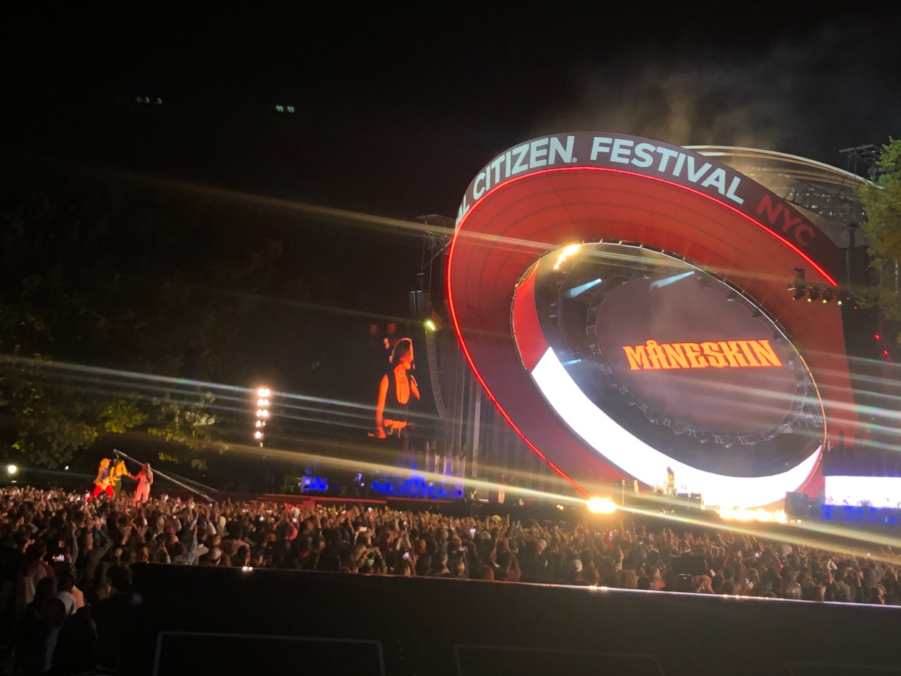

Фестиваль Global Citizen отмечает десятилетие борьбы с бедностью с помощью Firehouse Productions и JBL Professional
Недавние новости JBL Professional в Нью—ЙОРКЕ - Для обеспечения широкого охвата и сбалансированного качества звука на фестивале Global Citizen 2022 компания Firehouse Productions установила самые современные линейные системы JBL Professional серии VTX.
Основанный в 2012 году Райаном Галлом и Хью Эвансом из Global Poverty Project, Global Citizen Festival является ежегодным музыкальным фестивалем с одной гуманитарной целью — покончить с бедностью во всем мире. Вместо продажи билетов уникальная модель Global Citizen Festival предлагает бесплатные билеты на фестиваль в качестве награды для “граждан мира”, которые откликаются на призывы к реальным действиям в борьбе с бедностью. За десятилетие, прошедшее с момента его создания, граждане мира предприняли более 30,4 миллиона действий, в результате чего было выделено 2,4 миллиарда долларов на оказание помощи более чем 1,15 миллиардам людей, живущих в бедности по всему миру.
В рамках Global Citizen Festival 2022 года состоялись два мероприятия, которые прошли одновременно 24 сентября в Соединенных Штатах и Гане. Американский выпуск состоялся на Манхэттене на Большой лужайке Центрального парка и включал выступления Metallica, Мэрайи Кэри, Монескина, Чарли Пута, Братьев Джонас и многих других. Организаторы концертов в очередной раз наняли Firehouse Productions для поставки звуковой системы, достаточно мощной не только для крупного фестиваля с тысячами посетителей, но и такой, которая могла бы обеспечить мощность, необходимую для концерта Metallica. Чтобы обеспечить широкий охват и сбалансированное качество звука с четкостью и отдачей, Firehouse Productions внедрила комплексное решение JBL VTX live sound, разработанное Полом Бауманом из PdB Sonic Design и оснащенное более чем 100 линейными динамиками VTX V25-II.
“Звуковое оформление GCF 2022 было интересной задачей, и одной из главных целей было разработать мощную систему, которая соответствовала бы задачам Metallica”, - сказал Бауман. “В прошлом я несколько раз работал на фестивале Global Citizen, и мне было знакомо пространство, которое нужно было охватить, но нам нужно было расширить его для Metallica. Мы выбрали комплектное линейное решение JBL VTX, включающее 36 блоков V25-II (по 18 с каждой стороны) для основной системы LR, дополненное четырьмя распределенными фронтальными динамиками V25-II и двумя V25-II, расположенными поверх трех сабвуферов S28 для внешнего наполнения. Это было дополнено двумя башнями ближней задержки по 15 V25-II в каждой и двумя позициями дальней задержки по двенадцать V25-II в каждой. В прошлом ближняя и дальняя задержки составляли по девять динамиков соответственно. Дополнительные динамики V25-II обеспечили нам впечатляющее звучание, в котором мы нуждались для Metallica”.
JBL VTX V25-II - это полноразмерный трехполосный линейный элемент с высокой направленностью, который включает в себя волновод нового поколения 4-го поколения для улучшения характеристик дальнего действия и управления волновым фронтом. Звуковая система главной сцены полностью состояла из динамиков V25-II, что помогало Бауману и команде пожарной части обеспечивать высокое качество звука и уровень звукового давления в каждой зоне фестиваля. Чтобы обеспечить столь же мощный басовый отклик, команда Firehouse audio установила 36 двойных 18-дюймовых сабвуферов JBL G28 в однолинейной гибридной кардиоидной конфигурации и EDS (electronic delay-steered). В соответствии с дизайном Баумана, Firehouse дополнила нижнюю часть четырьмя распределенными блоками по три кардиоидных сабвуфера JBL S28 в каждом для дополнительного покрытия EDS. Легендарное качество звука колонок JBL позволило компании Bauman быстро настроить систему в день фестиваля после отставания от графика производства из-за погодных условий.
“Погода была фактором, влияющим на количество дней загрузки”, - продолжил Бауман. “В первый день у нас было много дождя и сильный ветер на следующий день, поэтому мы не смогли обрезать, сфокусировать и настроить позиции задержки до утра в день показа. К счастью, заблаговременное детальное моделирование и оптимизация дали отличную отправную точку, и система была готова практически сразу”.
В дополнение к главной сцене существовала второстепенная сцена — Skyline Stage, расположенная непосредственно за фасадом здания. Бауман и производственная команда Firehouse справились с этой задачей, создав установку второй ступени, состоящую из динамиков JBL VTX V20. JBL VTX V20 обладает той же передовой технологией и исключительной производительностью, что и VTX V25, но в меньшем формате, что позволяет системе Bauman плавно переходить от одного этапа к другому.
“Сцена Skyline, расположенная рядом с позицией FOH, стала новинкой в этом году и представляла собой уникальную задачу с точки зрения звукового дизайна”, - сказал Бауман. “Из-за проблем со временем прибытия и локализацией мы решили установить вторую систему заднего обзора, чтобы привлечь внимание зрителей к сцене Skyline. Обеспечивая освещение от сцены Skyline обратно к главной сцене, центральная группа из шести динамиков VTX V20 была доставлена с крана, подвешивающего круглую видеостену. Мы использовали семь распределенных фронтальных заливок, расположенных на сабвуферах по периметру, чтобы дополнить центральную группу”.
“Чтобы сбалансировать охват центрального кластера, шесть коробок V20 для стрельбы сзади были сложены на платформе в месте задержки слева от дома”, - продолжил Бауман. “Когда произошли изменения, основная система FOH была отключена, и центральный кластер стал нулевым временным ориентиром с соответствующим изменением времени ближней и дальней задержки. Это привело к отличному освещению и локализации для зрителей, а также к очень плавному переходу от главной сцены к сцене Skyline".